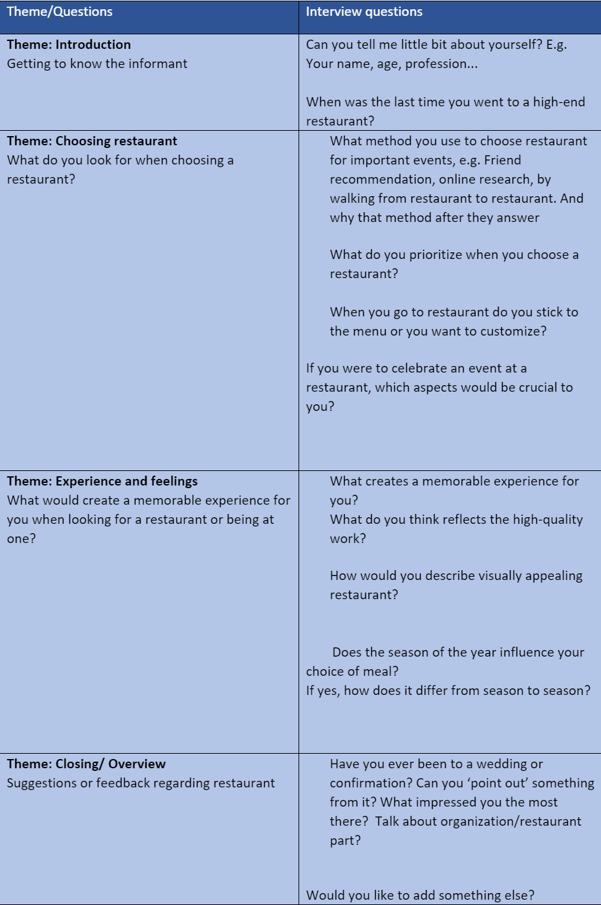
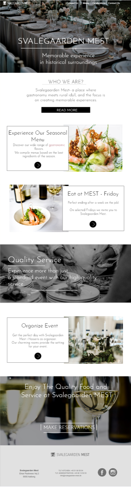
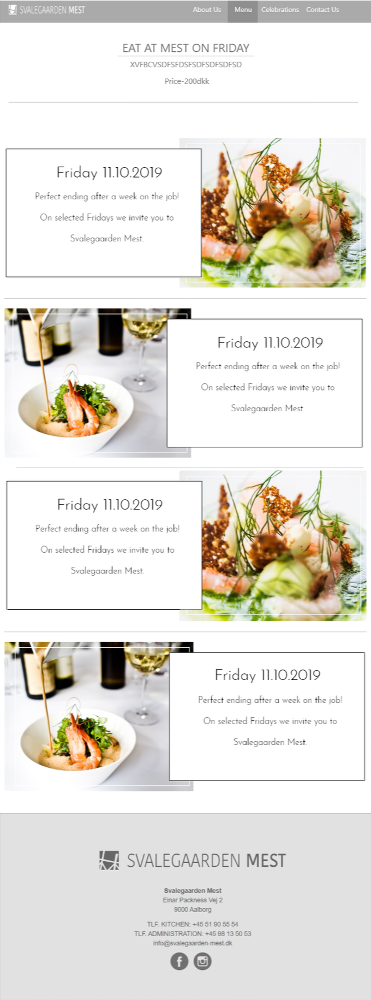
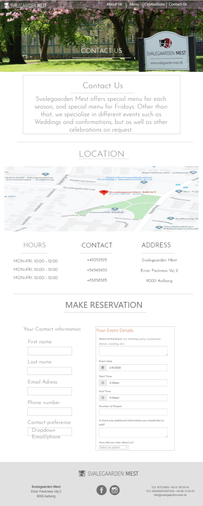
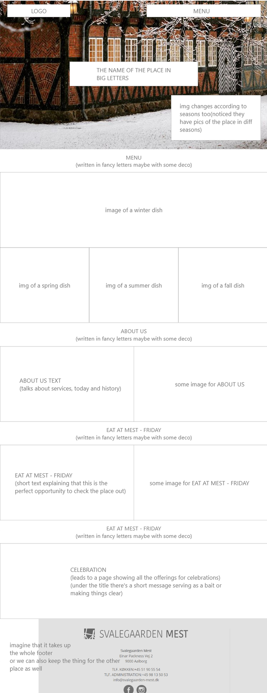
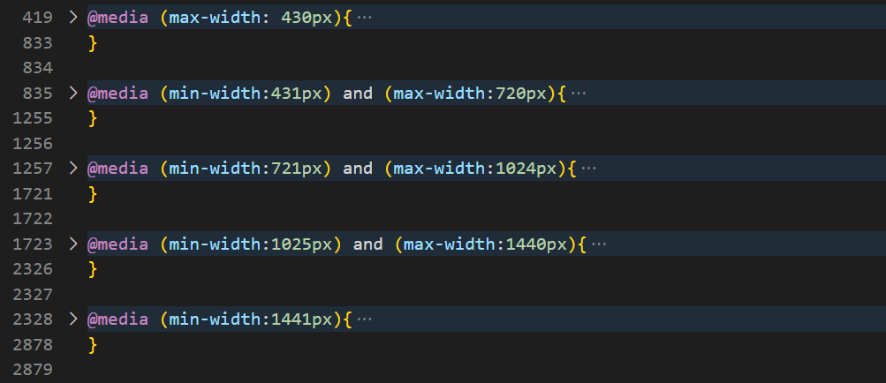
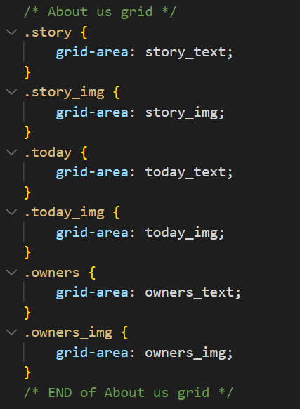
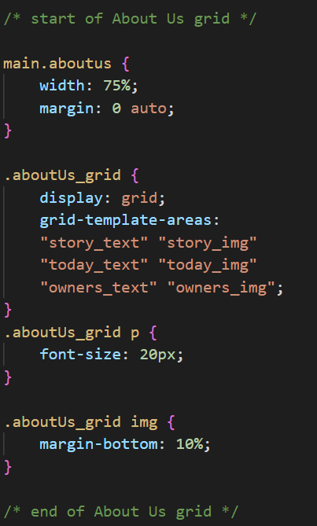

Problem and the task
Problem with Svalegaarden Mest is that their current website is mixed up with information about their Mad Med Mest restaurant. Their site couldn't fully represent high qualify of work because of bad information architecture so their owners wanted to make new unique website only for the catering services (without b2b information about Mad Med Mest), targeting only the customers.
Our task was to build a website with a clear visual identity and good information arhitecture in order to enhance usability and create good user experience, make different layouts for different seasonal menus in order to ocnvey the feeling of unique experience. Also, the task was to create a way for customers to communicate with the company.
Our process
We started the project by doing online research about who might be potential customers of Svalegaarden Mest; people from Nordjylland who like to go out and spend money on leisure activities.
That helped us to categorize and interview the right people who can give us valid information that helped us to improve quality of the website. Interviews were perfomed following the interview guide and later on analysed.
Interview Guide:
We started prototyping in a multiple iterations moving progressively from sketches to mock-ups. Each iteration consisted of 4 steps: prioritizing, creating, reviewing and reacting. Since we wanted to do visually appealing layout, we implemented many design principles into it. Some of them Gestalt princples(closure, common region, figure/ground, proximity...), typography theories, colour wheel and rule of thirds... The group worked constantly with Adobe XD because where we were able to work together on interactive prototypes.
High fidelity and low fidelity prototypes:
   Media queries, grids
  